2025 Higher Human Biology - Paper 2 questions
Source: Scottish Qualifications Authority (SQA) / Qualifications Scotland. This is a StemInteract HTML companion, not an official HTML edition. Extracted text is supplied alongside unaltered page images; use the images or original PDF for table layout, diagrams and symbols.
Jump to a question
PDF page 1
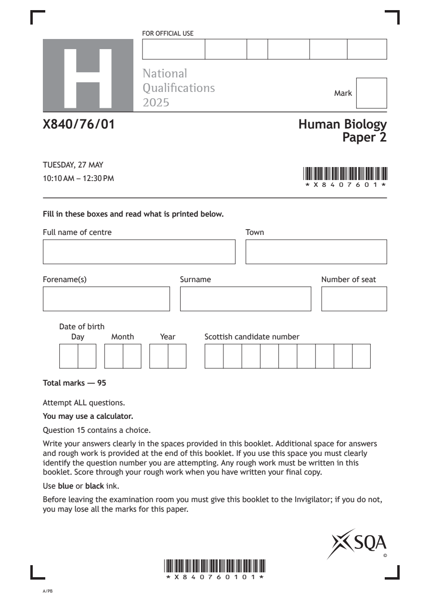
Selectable page text
FOR OFFICIAL USE
H
National
Qualications
Mark
2025
X840/76/01 Human Biology
Paper 2
TUESDAY, 27 MAY
10:10 AM – 12:30 PM
*X8407601*
Fill in these boxes and read what is printed below.
Full name of centre Town
Forename(s) Surname Number of seat
Date of birth
Day Month Year Scottish candidate number
Total marks — 95
Attempt ALL questions.
You may use a calculator.
Question 15 contains a choice.
Write your answers clearly in the spaces provided in this booklet. Additional space for answers
and rough work is provided at the end of this booklet. If you use this space you must clearly
identify the question number you are attempting. Any rough work must be written in this
booklet. Score through your rough work when you have written your final copy.
Use blue or black ink.
Before leaving the examination room you must give this booklet to the Invigilator; if you do not,
you may lose all the marks for this paper.
©
*X840760101*
A/PBPDF page 2
Question 1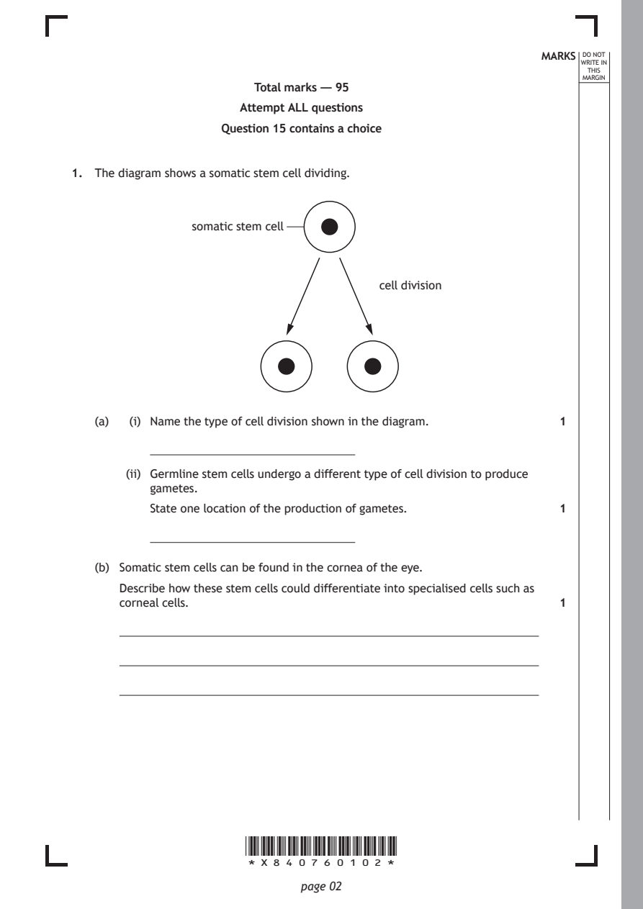
Selectable page text
MARKS DO NOT
WRITE IN
THIS
MARGIN
Total marks — 95
Attempt ALL questions
Question 15 contains a choice
1. The diagram shows a somatic stem cell dividing.
somatic stem cell
cell division
(a) (i) Name the type of cell division shown in the diagram. 1
(ii) Germline stem cells undergo a different type of cell division to produce
gametes.
State one location of the production of gametes. 1
(b) Somatic stem cells can be found in the cornea of the eye.
Describe how these stem cells could differentiate into specialised cells such as
corneal cells. 1
*X840760102*
page 02PDF page 3
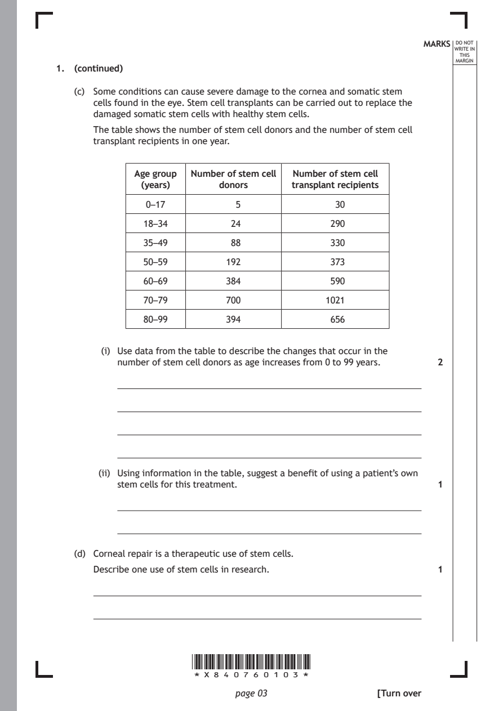
Selectable page text
MARKS DO NOT
WRITE IN
THIS
MARGIN
1. (continued)
(c) Some conditions can cause severe damage to the cornea and somatic stem
cells found in the eye. Stem cell transplants can be carried out to replace the
damaged somatic stem cells with healthy stem cells.
The table shows the number of stem cell donors and the number of stem cell
transplant recipients in one year.
Age group Number of stem cell Number of stem cell
(years) donors transplant recipients
0–17 5 30
18–34 24 290
35–49 88 330
50–59 192 373
60–69 384 590
70–79 700 1021
80–99 394 656
(i) Use data from the table to describe the changes that occur in the
number of stem cell donors as age increases from 0 to 99 years. 2
(ii) Using information in the table, suggest a benefit of using a patient’s own
stem cells for this treatment. 1
(d) Corneal repair is a therapeutic use of stem cells.
Describe one use of stem cells in research. 1
*X840760103*
page 03 [Turn overPDF page 4
Question 2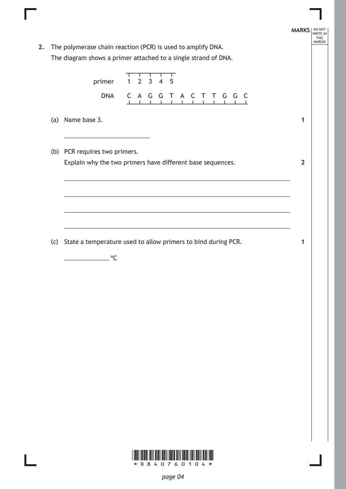
Selectable page text
MARKS DO NOT
WRITE IN
THIS
MARGIN
2. The polymerase chain reaction (PCR) is used to amplify DNA.
The diagram shows a primer attached to a single strand of DNA.
primer 1 2 3 4 5
DNA C A G G T A C T T G G C
(a) Name base 3. 1
(b) PCR requires two primers.
Explain why the two primers have different base sequences. 2
(c) State a temperature used to allow primers to bind during PCR. 1
������������������������� °C
*X840760104*
page 04PDF page 5
Question 3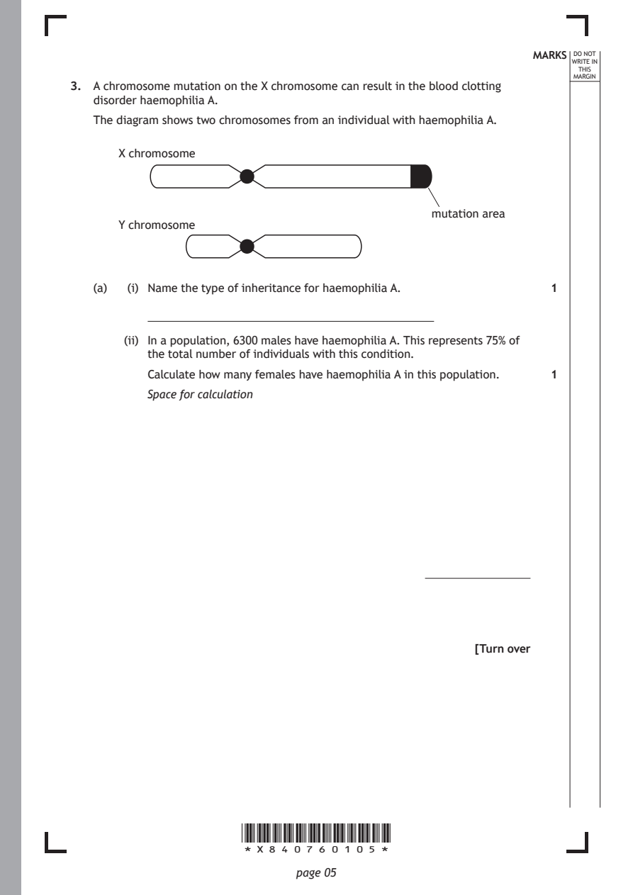
Selectable page text
MARKS DO NOT
WRITE IN
THIS
MARGIN
3. A chromosome mutation on the X chromosome can result in the blood clotting
disorder haemophilia A.
The diagram shows two chromosomes from an individual with haemophilia A.
X chromosome
mutation area
Y chromosome
(a) (i) Name the type of inheritance for haemophilia A. 1
(ii) In a population, 6300 males have haemophilia A. This represents 75% of
the total number of individuals with this condition.
Calculate how many females have haemophilia A in this population. 1
Space for calculation
[Turn over
*X840760105*
page 05PDF page 6
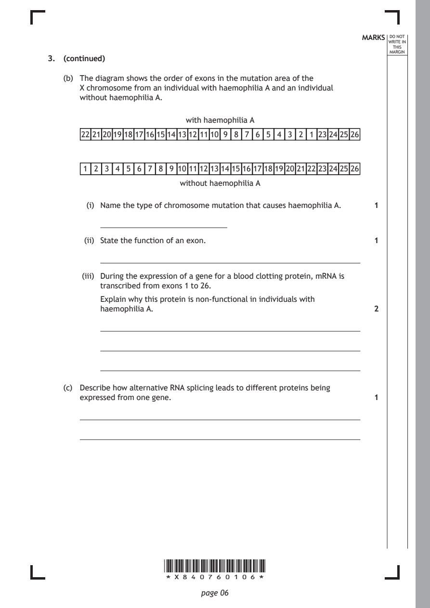
Selectable page text
MARKS DO NOT
WRITE IN
THIS
MARGIN
3. (continued)
(b) The diagram shows the order of exons in the mutation area of the
X chromosome from an individual with haemophilia A and an individual
without haemophilia A.
with haemophilia A
22 212019 18 17 16 15 14 13 12 1110 9 8 7 6 5 4 3 2 1 23 24 25 26
1 2 3 4 5 6 7 8 9 10 11 12 13 14 15 16 17 18 19 20 21 22 23 24 25 26
without haemophilia A
(i) Name the type of chromosome mutation that causes haemophilia A. 1
(ii) State the function of an exon. 1
(iii) During the expression of a gene for a blood clotting protein, mRNA is
transcribed from exons 1 to 26.
Explain why this protein is non‑functional in individuals with
haemophilia A. 2
(c) Describe how alternative RNA splicing leads to different proteins being
expressed from one gene. 1
*X840760106*
page 06PDF page 7
Question 4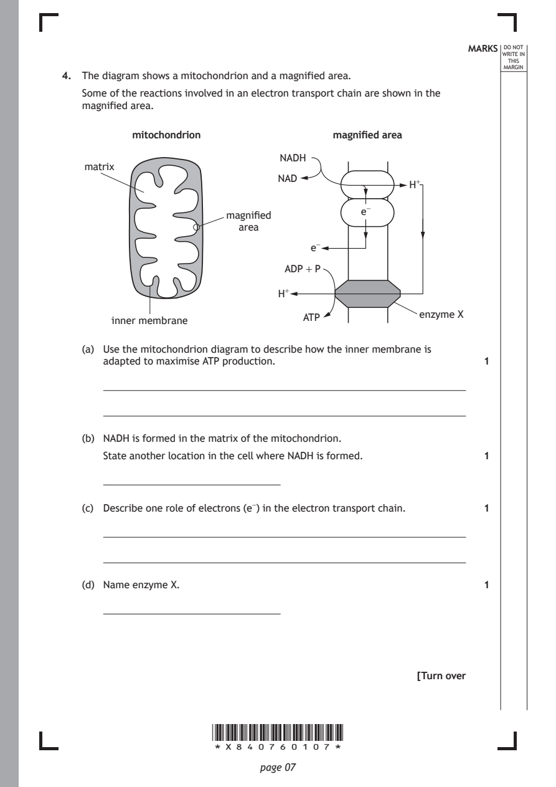
Selectable page text
MARKS DO NOT
WRITE IN
THIS
MARGIN
4. The diagram shows a mitochondrion and a magnified area.
Some of the reactions involved in an electron transport chain are shown in the
magnified area.
mitochondrion magnified area
NADH
matrix
NAD
H+
e−
magnified
area
e−
ADP + P
H+
enzyme X
ATP
inner membrane
(a) Use the mitochondrion diagram to describe how the inner membrane is
adapted to maximise ATP production. 1
(b) NADH is formed in the matrix of the mitochondrion.
State another location in the cell where NADH is formed. 1
(c) Describe one role of electrons (e−) in the electron transport chain. 1
(d) Name enzyme X. 1
[Turn over
*X840760107*
page 07PDF page 8
Question 5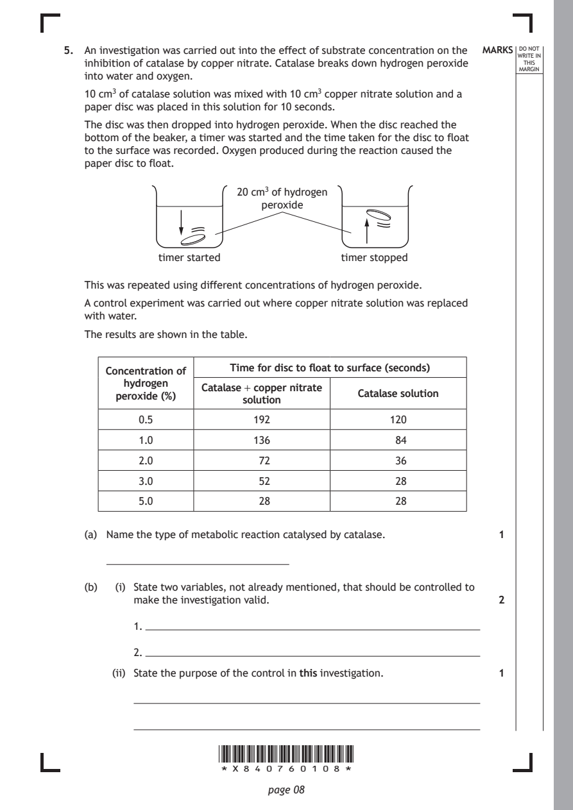
Selectable page text
5. An investigation was carried out into the effect of substrate concentration on the MARKS DO NOT
WRITE IN
inhibition of catalase by copper nitrate. Catalase breaks down hydrogen peroxide THIS
MARGIN
into water and oxygen.
10 cm3 of catalase solution was mixed with 10 cm3 copper nitrate solution and a
paper disc was placed in this solution for 10 seconds.
The disc was then dropped into hydrogen peroxide. When the disc reached the
bottom of the beaker, a timer was started and the time taken for the disc to float
to the surface was recorded. Oxygen produced during the reaction caused the
paper disc to float.
20 cm3 of hydrogen
peroxide
timer started timer stopped
This was repeated using different concentrations of hydrogen peroxide.
A control experiment was carried out where copper nitrate solution was replaced
with water.
The results are shown in the table.
Time for disc to float to surface (seconds)
Concentration of
hydrogen
Catalase + copper nitrate
peroxide (%) Catalase solution
solution
0.5 192 120
1.0 136 84
2.0 72 36
3.0 52 28
5.0 28 28
(a) Name the type of metabolic reaction catalysed by catalase. 1
(b) (i) State two variables, not already mentioned, that should be controlled to
make the investigation valid. 2
1.
2.
(ii) State the purpose of the control in this investigation. 1
*X840760108*
page 08PDF page 9
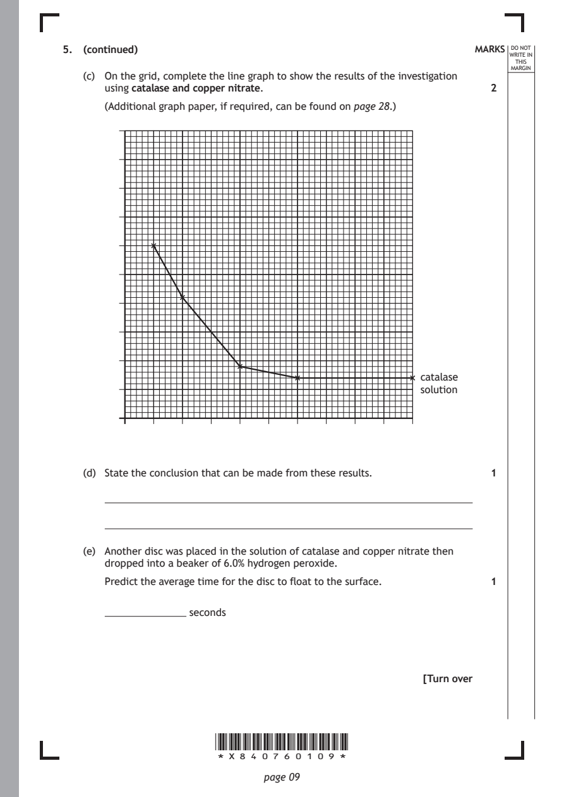
Selectable page text
5. (continued) MARKS DO NOT
WRITE IN
THIS
MARGIN
(c) On the grid, complete the line graph to show the results of the investigation
using catalase and copper nitrate. 2
(Additional graph paper, if required, can be found on page 28.)
catalase
solution
(d) State the conclusion that can be made from these results. 1
(e) Another disc was placed in the solution of catalase and copper nitrate then
dropped into a beaker of 6.0% hydrogen peroxide.
Predict the average time for the disc to float to the surface. 1
���������������������������� seconds
[Turn over
*X840760109*
page 09PDF page 10
Question 6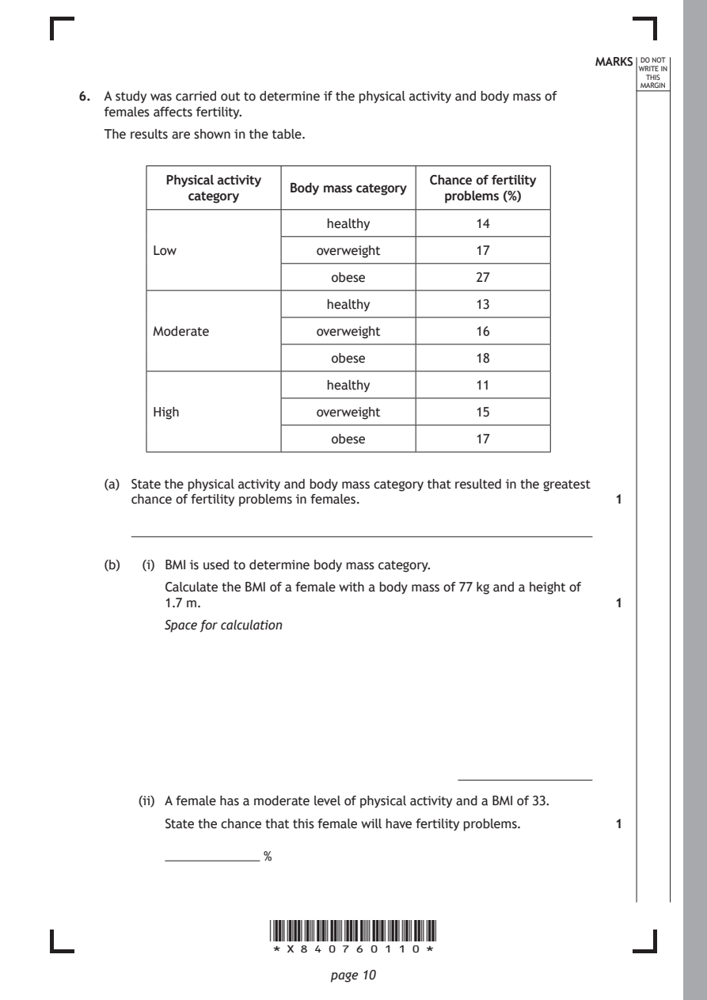
Selectable page text
MARKS DO NOT
WRITE IN
THIS
MARGIN
6. A study was carried out to determine if the physical activity and body mass of
females affects fertility.
The results are shown in the table.
Physical activity Chance of fertility
Body mass category
category problems (%)
healthy 14
Low overweight 17
obese 27
healthy 13
Moderate overweight 16
obese 18
healthy 11
High overweight 15
obese 17
(a) State the physical activity and body mass category that resulted in the greatest
chance of fertility problems in females. 1
(b) (i) BMI is used to determine body mass category.
Calculate the BMI of a female with a body mass of 77 kg and a height of
1.7 m. 1
Space for calculation
(ii) A female has a moderate level of physical activity and a BMI of 33.
State the chance that this female will have fertility problems. 1
�������������������������� %
*X840760110*
page 10PDF page 11
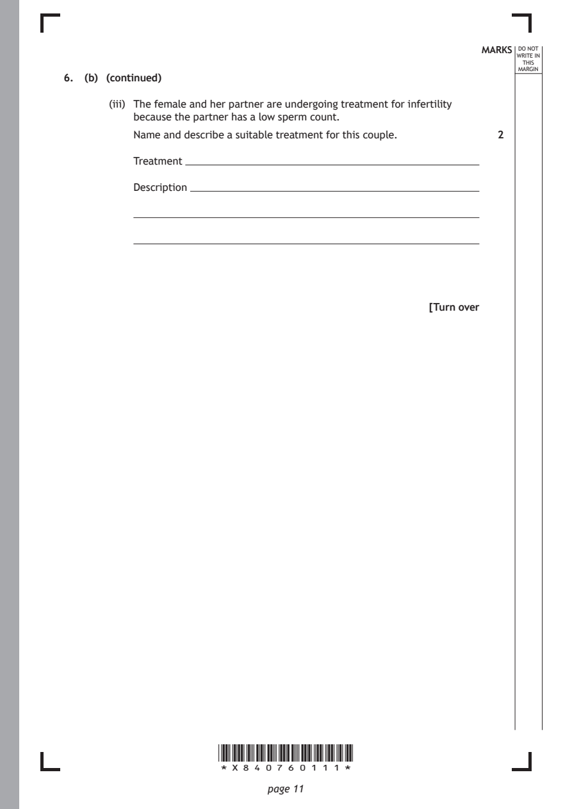
Selectable page text
MARKS DO NOT
WRITE IN
THIS
MARGIN
6. (b) (continued)
(iii) The female and her partner are undergoing treatment for infertility
because the partner has a low sperm count.
Name and describe a suitable treatment for this couple. 2
Treatment
Description
[Turn over
*X840760111*
page 11PDF page 12
Question 7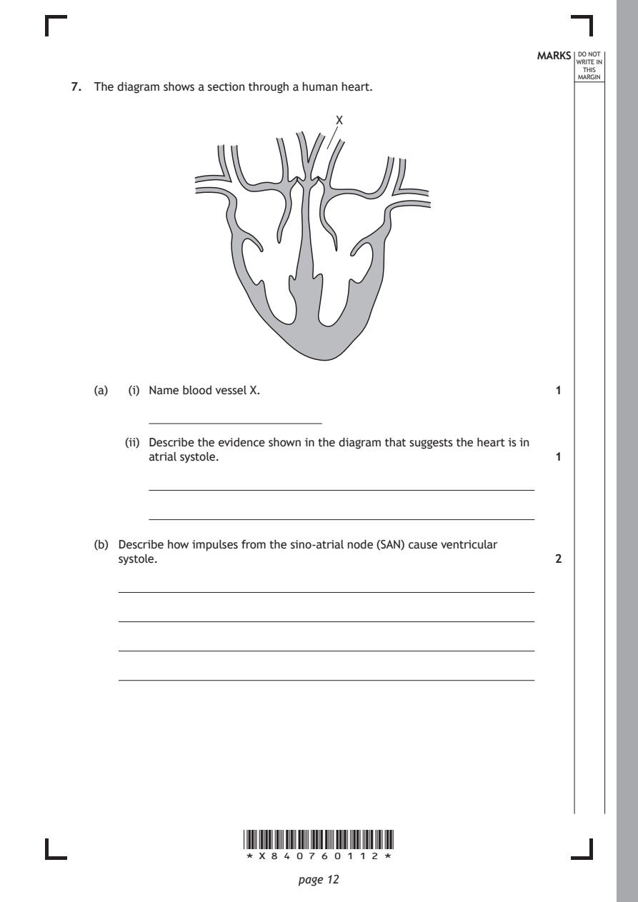
Selectable page text
MARKS DO NOT
WRITE IN
THIS
MARGIN
7. The diagram shows a section through a human heart.
X
(a) (i) Name blood vessel X. 1
(ii) Describe the evidence shown in the diagram that suggests the heart is in
atrial systole. 1
(b) Describe how impulses from the sino‑atrial node (SAN) cause ventricular
systole. 2
*X840760112*
page 12PDF page 13
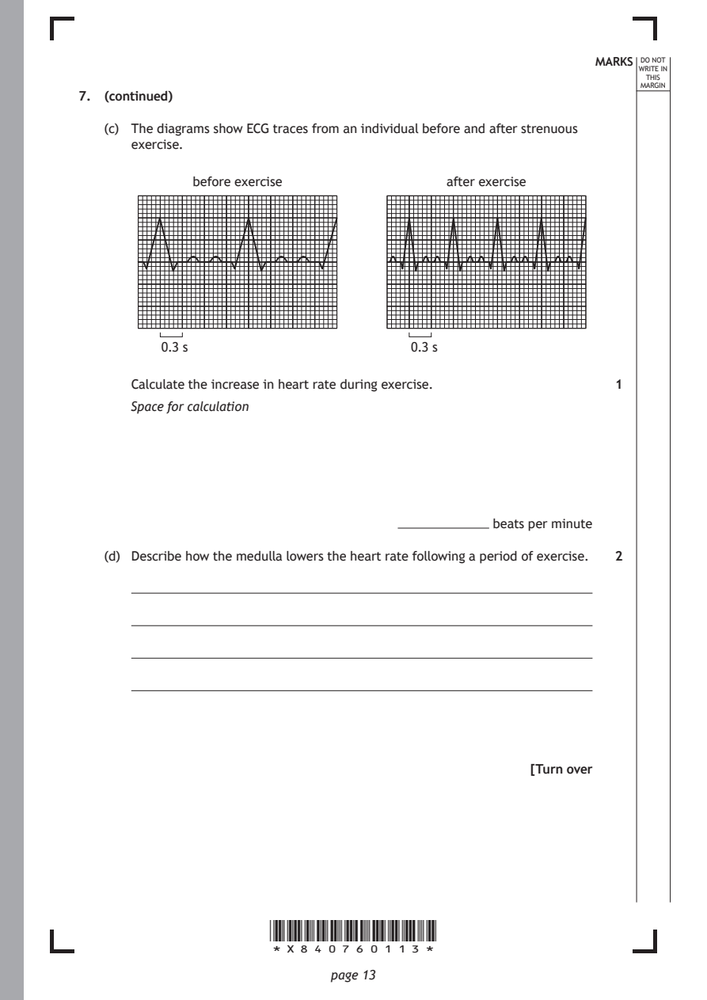
Selectable page text
MARKS DO NOT
WRITE IN
THIS
MARGIN
7. (continued)
(c) The diagrams show ECG traces from an individual before and after strenuous
exercise.
before exercise after exercise
0.3 s 0.3 s
Calculate the increase in heart rate during exercise. 1
Space for calculation
������������������������� beats per minute
(d) Describe how the medulla lowers the heart rate following a period of exercise. 2
[Turn over
*X840760113*
page 13PDF page 14
Question 8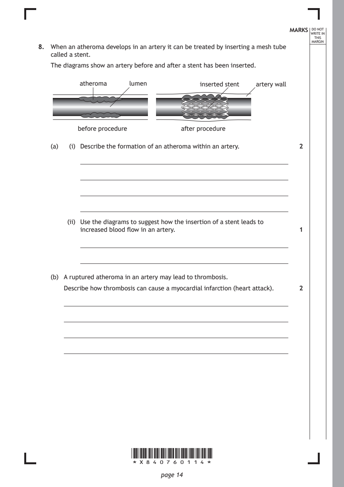
Selectable page text
MARKS DO NOT
WRITE IN
THIS
MARGIN
8. When an atheroma develops in an artery it can be treated by inserting a mesh tube
called a stent.
The diagrams show an artery before and after a stent has been inserted.
atheroma lumen inserted stent artery wall
before procedure after procedure
(a) (i) Describe the formation of an atheroma within an artery. 2
(ii) Use the diagrams to suggest how the insertion of a stent leads to
increased blood flow in an artery. 1
(b) A ruptured atheroma in an artery may lead to thrombosis.
Describe how thrombosis can cause a myocardial infarction (heart attack). 2
*X840760114*
page 14PDF page 15
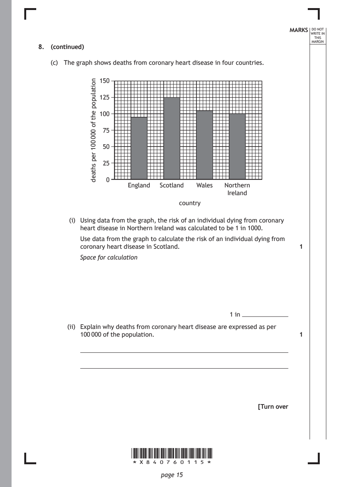
Selectable page text
MARKS DO NOT
WRITE IN
THIS
MARGIN
8. (continued)
(c) The graph shows deaths from coronary heart disease in four countries.
150
125
100
75
50
25
0
*X840760115*
page 15
noitalupop
eht
fo
000001
rep
shtaed
England Scotland Wales Northern
Ireland
country
(i) Using data from the graph, the risk of an individual dying from coronary
heart disease in Northern Ireland was calculated to be 1 in 1000.
Use data from the graph to calculate the risk of an individual dying from
coronary heart disease in Scotland. 1
Space for calculation
1 in ��������������������������
(ii) Explain why deaths from coronary heart disease are expressed as per
100 000 of the population. 1
[Turn overPDF page 16
Question 9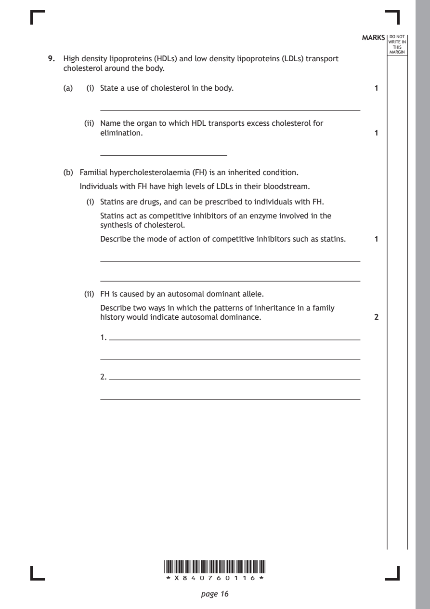
Selectable page text
MARKS DO NOT
WRITE IN
THIS
MARGIN
9. High density lipoproteins (HDLs) and low density lipoproteins (LDLs) transport
cholesterol around the body.
(a) (i) State a use of cholesterol in the body. 1
(ii) Name the organ to which HDL transports excess cholesterol for
elimination. 1
(b) Familial hypercholesterolaemia (FH) is an inherited condition.
Individuals with FH have high levels of LDLs in their bloodstream.
(i) Statins are drugs, and can be prescribed to individuals with FH.
Statins act as competitive inhibitors of an enzyme involved in the
synthesis of cholesterol.
Describe the mode of action of competitive inhibitors such as statins. 1
(ii) FH is caused by an autosomal dominant allele.
Describe two ways in which the patterns of inheritance in a family
history would indicate autosomal dominance. 2
1.
2.
*X840760116*
page 16PDF page 17
Question 10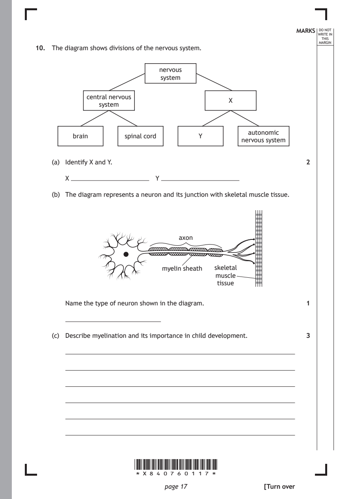
Selectable page text
MARKS DO NOT
WRITE IN
THIS
MARGIN
10. The diagram shows divisions of the nervous system.
nervous
system
central nervous
X
system
autonomic
brain spinal cord Y
nervous system
(a) Identify X and Y. 2
X ������������������������������������������� Y �������������������������������������������
(b) The diagram represents a neuron and its junction with skeletal muscle tissue.
axon
myelin sheath skeletal
muscle
tissue
Name the type of neuron shown in the diagram. 1
(c) Describe myelination and its importance in child development. 3
*X840760117*
page 17 [Turn overPDF page 18
Question 11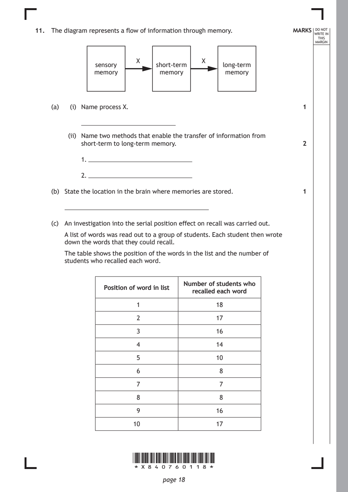
Selectable page text
11. The diagram represents a flow of information through memory. MARKS DO NOT
WRITE IN
THIS
MARGIN
X X
sensory short-term long-term
memory memory memory
(a) (i) Name process X. 1
(ii) Name two methods that enable the transfer of information from
short‑term to long‑term memory. 2
1.
2.
(b) State the location in the brain where memories are stored. 1
(c) An investigation into the serial position effect on recall was carried out.
A list of words was read out to a group of students. Each student then wrote
down the words that they could recall.
The table shows the position of the words in the list and the number of
students who recalled each word.
Number of students who
Position of word in list
recalled each word
1 18
2 17
3 16
4 14
5 10
6 8
7 7
8 8
9 16
10 17
*X840760118*
page 18PDF page 19
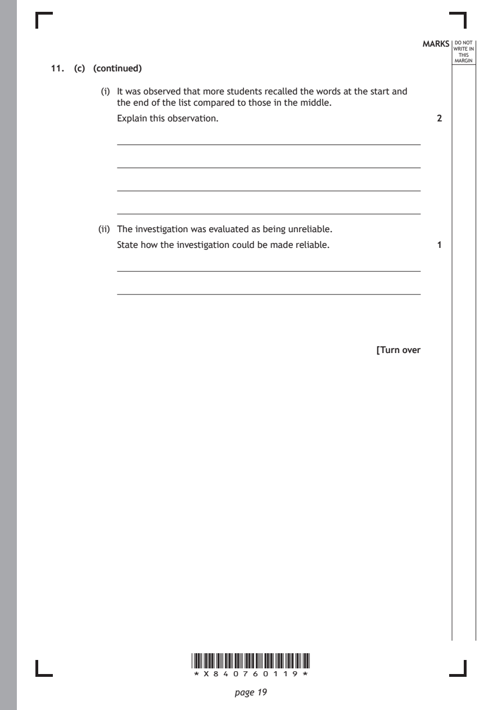
Selectable page text
MARKS DO NOT
WRITE IN
THIS
MARGIN
11. (c) (continued)
(i) It was observed that more students recalled the words at the start and
the end of the list compared to those in the middle.
Explain this observation. 2
(ii) The investigation was evaluated as being unreliable.
State how the investigation could be made reliable. 1
[Turn over
*X840760119*
page 19PDF page 20
Question 12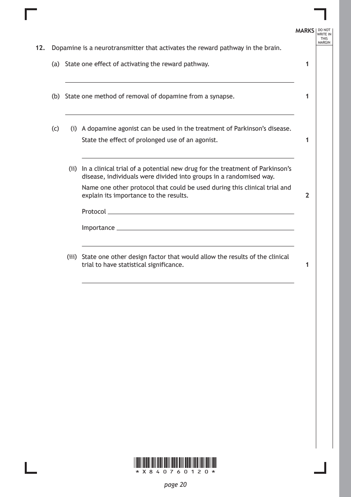
Selectable page text
MARKS DO NOT
WRITE IN
THIS
MARGIN
12. Dopamine is a neurotransmitter that activates the reward pathway in the brain.
(a) State one effect of activating the reward pathway. 1
(b) State one method of removal of dopamine from a synapse. 1
(c) (i) A dopamine agonist can be used in the treatment of Parkinson’s disease.
State the effect of prolonged use of an agonist. 1
(ii) In a clinical trial of a potential new drug for the treatment of Parkinson’s
disease, individuals were divided into groups in a randomised way.
Name one other protocol that could be used during this clinical trial and
explain its importance to the results. 2
Protocol
Importance
(iii) State one other design factor that would allow the results of the clinical
trial to have statistical significance. 1
*X840760120*
page 20PDF page 21
Question 13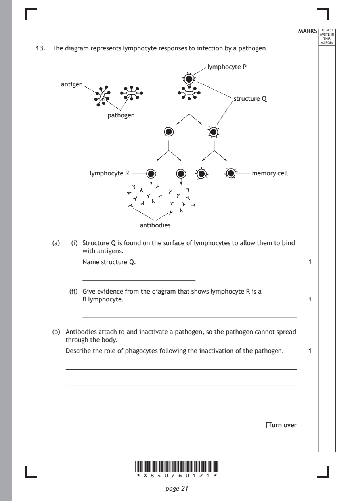
Selectable page text
MARKS DO NOT
WRITE IN
THIS
MARGIN
13. The diagram represents lymphocyte responses to infection by a pathogen.
lymphocyte P
antigen
structure Q
pathogen
lymphocyte R memory cell
antibodies
(a) (i) Structure Q is found on the surface of lymphocytes to allow them to bind
with antigens.
Name structure Q. 1
(ii) Give evidence from the diagram that shows lymphocyte R is a
B lymphocyte. 1
(b) Antibodies attach to and inactivate a pathogen, so the pathogen cannot spread
through the body.
Describe the role of phagocytes following the inactivation of the pathogen. 1
[Turn over
*X840760121*
page 21PDF page 22
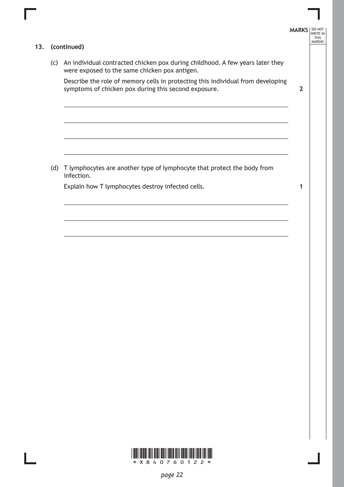
Selectable page text
MARKS DO NOT
WRITE IN
THIS
MARGIN
13. (continued)
(c) An individual contracted chicken pox during childhood. A few years later they
were exposed to the same chicken pox antigen.
Describe the role of memory cells in protecting this individual from developing
symptoms of chicken pox during this second exposure. 2
(d) T lymphocytes are another type of lymphocyte that protect the body from
infection.
Explain how T lymphocytes destroy infected cells. 1
*X840760122*
page 22PDF page 23
Selectable page text
[Turn over for next question
DO NOT WRITE ON THIS PAGE
*X840760123*
page 23PDF page 24
Question 14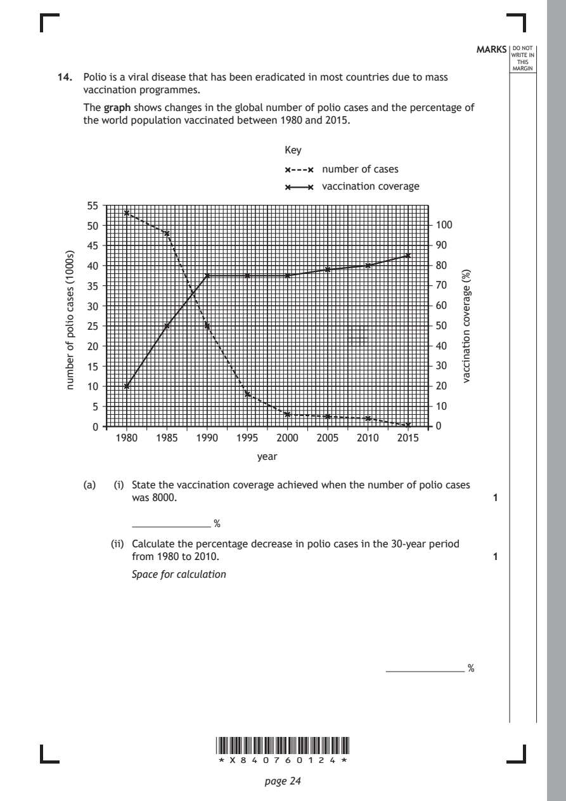
Selectable page text
MARKS DO NOT
WRITE IN
THIS
MARGIN
14. Polio is a viral disease that has been eradicated in most countries due to mass
vaccination programmes.
The graph shows changes in the global number of polio cases and the percentage of
the world population vaccinated between 1980 and 2015.
Key
number of cases
vaccination coverage
55
50 100
45 90
40 80
35 70
30 60
25 50
20 40
15 30
10 20
5 10
0 0
1980 1985 1990 1995 2000 2005 2010 2015
year
*X840760124*
page 24
)s0001(
sesac
oilop
fo
rebmun
)%(
egarevoc
noitaniccav
(a) (i) State the vaccination coverage achieved when the number of polio cases
was 8000. 1
��������������������������� %
(ii) Calculate the percentage decrease in polio cases in the 30‑year period
from 1980 to 2010. 1
Space for calculation
��������������������������� %PDF page 25
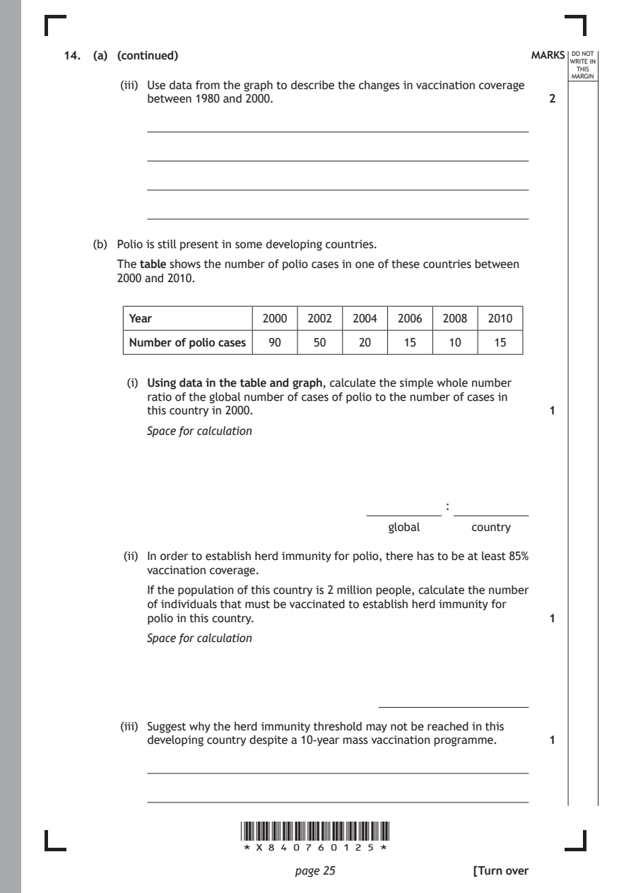
Selectable page text
14. (a) (continued) MARKS DO NOT
WRITE IN
THIS
MARGIN
(iii) Use data from the graph to describe the changes in vaccination coverage
between 1980 and 2000. 2
(b) Polio is still present in some developing countries.
The table shows the number of polio cases in one of these countries between
2000 and 2010.
Year 2000 2002 2004 2006 2008 2010
Number of polio cases 90 50 20 15 10 15
(i) Using data in the table and graph, calculate the simple whole number
ratio of the global number of cases of polio to the number of cases in
this country in 2000. 1
Space for calculation
:
global country
(ii) In order to establish herd immunity for polio, there has to be at least 85%
vaccination coverage.
If the population of this country is 2 million people, calculate the number
of individuals that must be vaccinated to establish herd immunity for
polio in this country. 1
Space for calculation
(iii) Suggest why the herd immunity threshold may not be reached in this
developing country despite a 10‑year mass vaccination programme. 1
*X840760125*
page 25 [Turn overPDF page 26
Question 15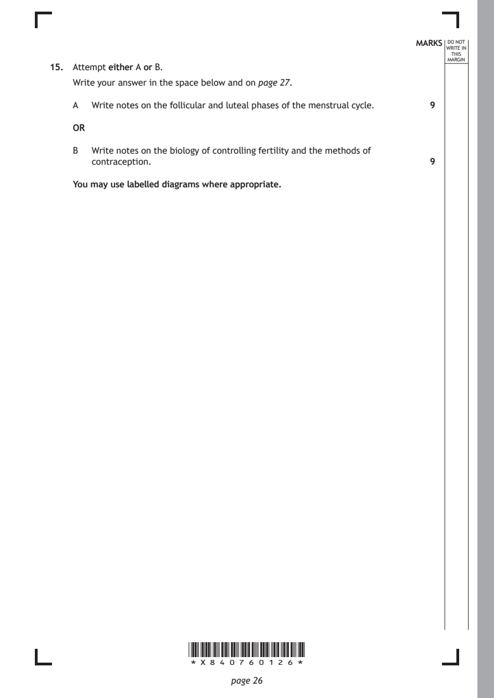
Selectable page text
MARKS DO NOT
WRITE IN
THIS
MARGIN
15. Attempt either A or B.
Write your answer in the space below and on page 27.
A Write notes on the follicular and luteal phases of the menstrual cycle. 9
OR
B Write notes on the biology of controlling fertility and the methods of
contraception. 9
You may use labelled diagrams where appropriate.
*X840760126*
page 26PDF page 27
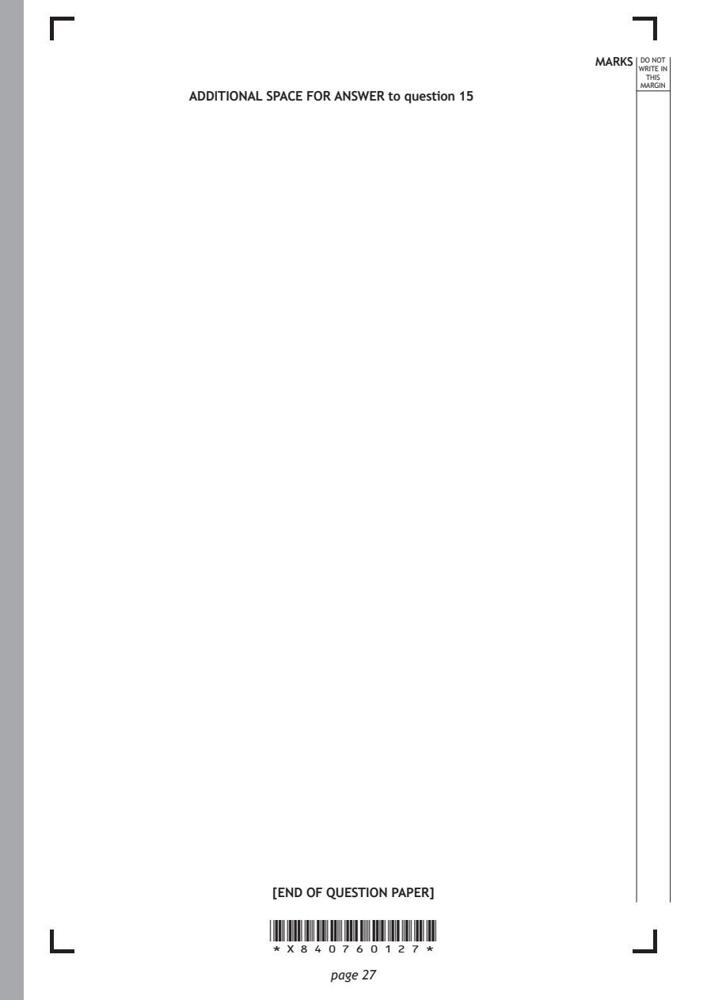
Selectable page text
MARKS DO NOT
WRITE IN
THIS
MARGIN
ADDITIONAL SPACE FOR ANSWER to question 15
[END OF QUESTION PAPER]
*X840760127*
page 27PDF page 28
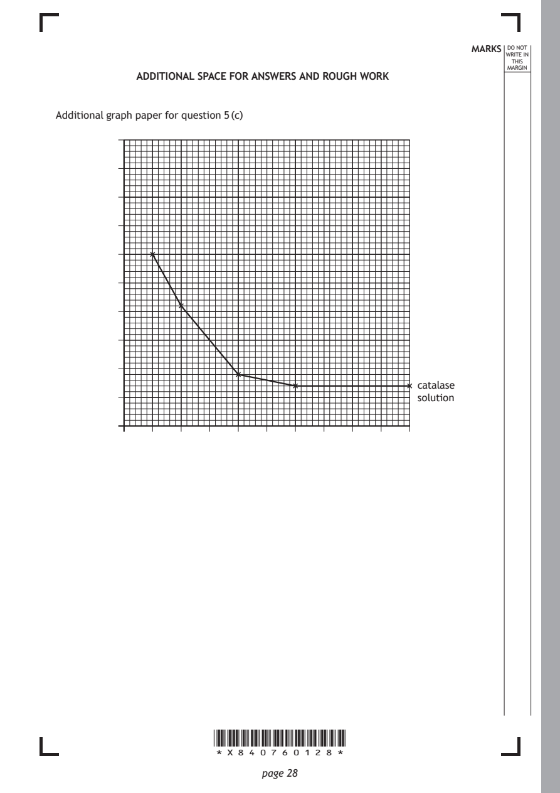
Selectable page text
MARKS DO NOT
WRITE IN
THIS
MARGIN
ADDITIONAL SPACE FOR ANSWERS AND ROUGH WORK
Additional graph paper for question 5 (c)
catalase
solution
*X840760128*
page 28PDF page 29
Selectable page text
MARKS DO NOT
WRITE IN
THIS
MARGIN
ADDITIONAL SPACE FOR ANSWERS AND ROUGH WORK
*X840760129*
page 29PDF page 30
Selectable page text
MARKS DO NOT
WRITE IN
THIS
MARGIN
ADDITIONAL SPACE FOR ANSWERS AND ROUGH WORK
*X840760130*
page 30PDF page 31
Selectable page text
[BLANK PAGE]
DO NOT WRITE ON THIS PAGE
*X840760131*
page 31PDF page 32

Selectable page text
[BLANK PAGE]
DO NOT WRITE ON THIS PAGE
*X840760132*
page 32